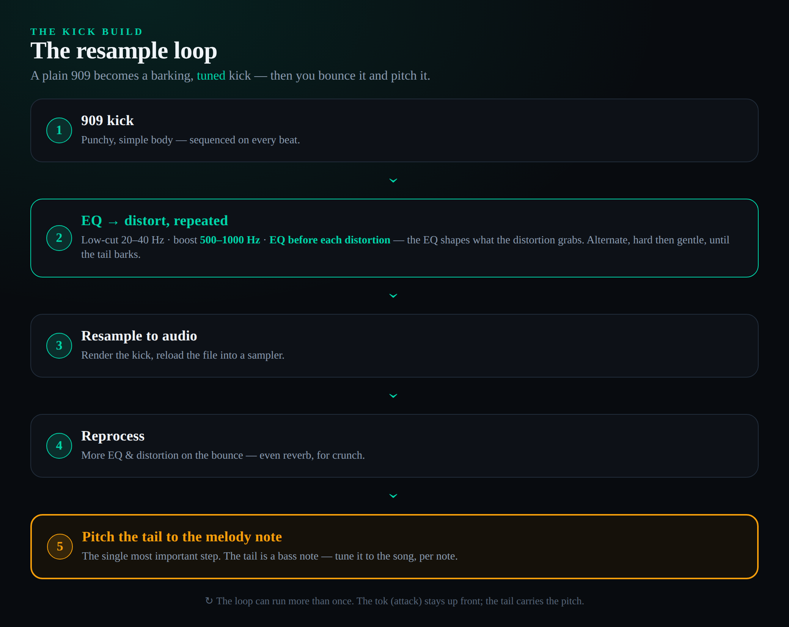
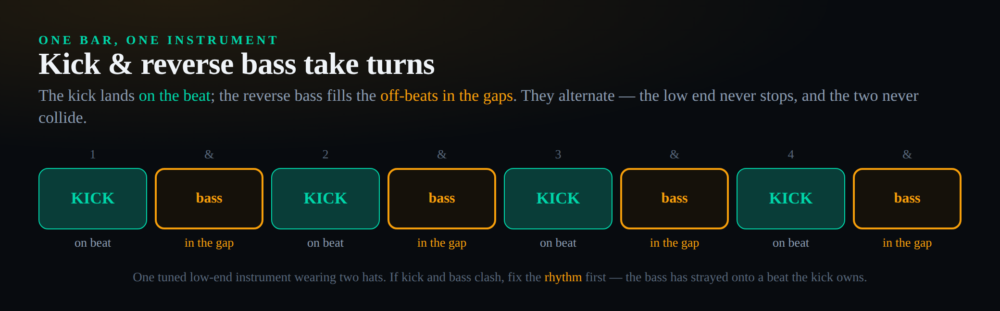
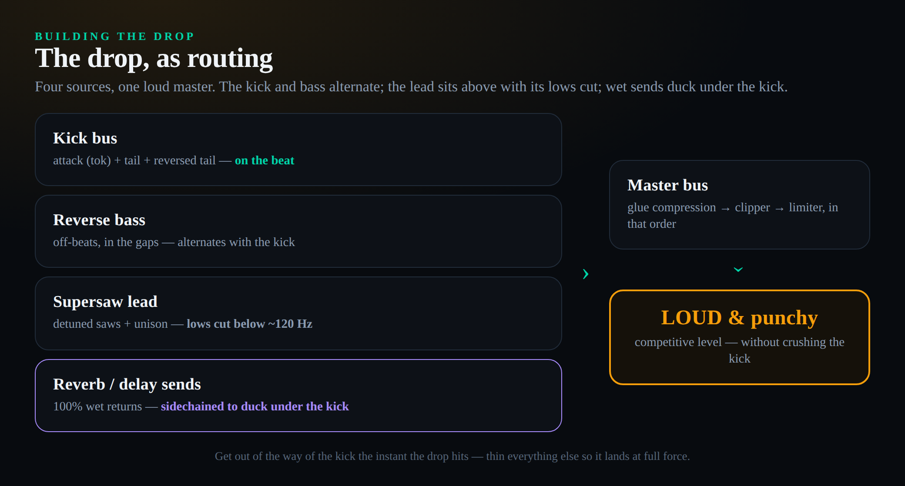

Most genres hand you a kit of parts and ask you to arrange them. Hardstyle hands you one part and asks you to build it. The genre’s entire identity — that enormous, barking, almost vocal kick that seems to shout a pitch at you — is not a sample you drop in. It is a sound you design, distort, render, and tune, and almost everything else in a hardstyle track is arrangement around it. There is one idea that turns the whole style from baffling to obvious, and it is this: in hardstyle the kick is not a drum, it is the bassline, tuned. The kick’s tonal tail and the signature reverse bass are the same pitched low-end instrument taking turns across the beat — the kick on the beat, the bass in the gaps between. Hear it that way and the genre unlocks. This guide teaches you to build that instrument from a plain 909, to fix it when it sounds wrong, and to arrange it into a drop that actually hits.
To make hardstyle you build the kick, because the kick is the genre. Start from a punchy 909, then run a long chain of EQ-before-distortion stages to grow a tonal, “barking” tail, resample it to audio, and process it again until it sings. Then pitch the tail to your melody — this is the single most important step. The reverse bass is that same tail’s other half, played on the off-beats in the gaps between kicks, shaped with a 500–1000 Hz boost plus clip and phase distortion. Add a detuned supersaw lead pitched to the same key, arrange intro→build→drop, and push the master loud. Tempo sits around 150–160 BPM.
Hardstyle is one instrument wearing two hats
Hardstyle grew out of the late-1990s Dutch scene, where hard trance and the harder, gabber-rooted hardcore styles bled into each other; producers kept the driving, euphoric melodies of hard trance and married them to a distorted, kick-led low end. The result is a genre that is unmistakably Dutch in origin and now global at festival scale. Contemporary tracks run roughly 150 to 160 BPM — classic euphoric hardstyle tends to sit nearer 150, while a lot of modern and rawer material pushes 155 to 160. It splits into a few broad camps you should know by name: euphoric hardstyle, which leans on uplifting major-key melodies and a cleaner kick; rawstyle (often just “raw”), which is darker, more distorted and more aggressive; and early hardstyle, the bouncier original sound built on reverse bass.
What every one of those camps shares is the thing newcomers miss. They treat the kick, the bass and the lead as three separate craft problems, the way you might in techno or trance, where the kick is a fairly fixed percussion element and the bass is its own synth line. In hardstyle that mental model fails, because the kick has a pitch. Its tail is a tuned, sustained tone — effectively a bass note — and the reverse bass is built from the same material, just shifted into the spaces the kick leaves behind. So you are not designing three things. You are designing one tuned low-end instrument and deciding, beat by beat, whether it speaks as a kick or as a bass.
This is also why hardstyle shares more DNA with the harder bass musics than its trancey melodies suggest; the obsessive, design-it-from-scratch attitude to a single signature sound is the same instinct that drives dubstep sound design, only aimed at a kick instead of a wobble. Internalise the one-instrument idea before you touch a plugin. Everything below — the resampling loop, the diagnosis of a bad kick, the reverse-bass rhythm, the euphoric-versus-raw fork — is downstream of it. Get the tuned low end right and a hardstyle track almost arranges itself; get it wrong and no amount of melody or mixing will save the drop.
There is a reason this matters beyond pedantry. Because the low end is one designed object rather than three borrowed samples, a hardstyle producer can spend a genuinely disproportionate amount of time on a single kick — hours is normal, and veterans will tell you the kick is where most of a track’s production time goes. That sounds excessive until you realise that once the kick and its reverse-bass counterpart are right, the rest of the track is mostly arrangement and melody. The kick is not one element among many fighting for attention in the mix; it is the mix’s foundation, its loudest element, and the carrier of the harmony. Treat it as the project, not as a one-shot you audition and forget, and everything downstream gets easier.
It is worth hearing the sub-styles in your head before you build, because the choice shapes every later decision. Euphoric hardstyle is bright and emotional: cleaner kicks, major-key supersaw melodies that you could hum, big festival uplift. Rawstyle is its dark twin: heavily distorted, often longer kicks, dissonant minor harmony, and screeching leads — aggression over euphoria. Early hardstyle, the original 2000s sound, is bouncier and more minimal, built around the reverse-bass groove with less of the wall-of-distortion approach that came later. There are harder offshoots still — the faster, more extreme styles that border on hardcore — but euphoric, raw and early are the three you should be able to tell apart by ear, because almost everything you will reference falls into one of them.
The kick is a bass note shaped like a drum
Pull apart a finished hardstyle kick and you find two parts living in one sound. The first is the attack, known in the scene as the tok — the short, punchy click at the very front that gives the kick its impact and cuts through a loud mix. The second is the tail: the longer body that follows, and the part that carries actual pitch. That tail is not noise. It is a tuned tone, and when you play a run of kicks whose tails are pitched to follow a melody, your ear hears a bassline being played by the kicks themselves. That is the whole trick, and it is why a hardstyle kick can feel like it is singing.
Because the tail is pitched, you tune it like an instrument. The most crucial single action in the entire genre is to pitch each kick’s tail to the note of your melody at that moment — if the lead moves to an F, the kick under it should resolve to an F. Skip this and the drop sounds subtly, persistently wrong: the low end fights the melody instead of reinforcing it, and no one can tell you why it feels off. A quick way to keep yourself honest is to check the target note’s frequency with a note-to-frequency tool and confirm the tail’s fundamental is landing there.
This pitched-tail requirement is exactly why hardstyle kicks are resampled rather than played live from a synth. To get a tail that is both heavily distorted and cleanly tunable, you design the sound, render it to an audio file, and then load that file into a sampler so you can transpose it per note without re-running the whole distortion chain. A synth playing in real time cannot easily give you that combination of brutal processing and surgical pitch control. So the workflow is always: build, bounce, tune. The next section is the build.
It helps to be precise about what “pitched” means here, because beginners often confuse the kick’s sub thump with its tonal tail. The very front of the kick and its deepest sub are felt more than heard as a note; the tail, sitting up in the low-mids, is where your ear actually reads a pitch. That is why a hardstyle kick can be tuned without losing its weight: you move the tail’s fundamental to the melody note while the sub still delivers the body. When you transpose the resampled kick, you are really re-pitching that tonal tail. Keep that distinction in mind and the tuning step stops feeling like black magic — you are simply playing the tail like a bass note, with a drum attached to the front of it.
Designing the barking kick: the resample loop
Start with a raw kick that has a strong, simple body — a 909 is the classic choice, and many producers generate it from a 909 emulation like D16’s Drumazon or a dedicated kick synth such as Sonic Academy’s KICK (now on its third version) so they can control the attack and decay precisely. Sequence it on every beat. Your goal across the next steps is to take that plain, round kick and grow a distorted, harmonically rich tail out of it using nothing but equalisers and distortion in series.
The core technique — the one every serious tutorial agrees on — is to put an EQ before each distortion. Distortion does not treat all frequencies equally; it reacts to whatever you feed it. So the EQ in front is how you shape what the distortion grabs. The standard moves are to cut the very low end (a steep low cut around 20–40 Hz) to give the distortion clean headroom to work in, and to boost the resonant mid frequencies — roughly 500 to 1000 Hz, sometimes by aggressive amounts — because that band carries the tonal character of a hardstyle kick. Then comes a distortion. Then another EQ, re-shaping what the first distortion created. Then another distortion. You alternate the two, more aggressively at the start of the chain and more gently toward the end, until that round 909 starts to bark.
Two principles will save you hours. First, your kick will sound terrible for most of this process — that is normal, not a sign you are doing it wrong; a complete tail often takes a long chain, not two plugins. Second, the choice of distortion matters less than how you EQ around it: aggressive saturators and clippers are the tools of the trade, and our guide to using saturation covers why each flavour adds the harmonics it does. Once the tail sounds close, resample: render the kick to an audio file, drop it back into a sampler, and now you can keep processing the bounced version — more distortion, more EQ, even reverb for crunch — and, critically, transpose it per note. This bounce-and-reprocess cycle is the resample loop, and you may go around it more than once.

To make the loop concrete, here is the shape of a real chain on that 909. EQ one: low-cut at 30 Hz, broad +9 dB boost at 700 Hz. Distortion one: a hard overdrive or waveshaper, pushed until it bites. EQ two: notch out a harsh resonance the distortion created, nudge the 500–1000 Hz region again. Distortion two: a different flavour — a clipper, say — for a different harmonic colour. EQ three and a final, gentler distortion to taste. Some producers add a short reverb late in the chain purely for crunch and density, then EQ the result. The exact numbers are never the point; the pattern is — alternate EQ and distortion, listen to how each reshapes the last, and stop when the tail barks. Then bounce, reload, and reprocess the audio one more pass if it needs it.
Tail length is a control worth understanding on its own, because it is half of what makes a kick feel like one sub-style or another. A short tail reads as punchy and tight, closer to the early and bouncy end; a long, sustained tail fills more of the bar with tone and pushes toward the modern, wall-of-kick feel, but it also leaves less room for the reverse bass and risks ringing into the next beat. You set it partly at the source — the decay of your 909 or kick synth — and partly with volume envelopes and fades on the resampled audio. As a rule, make the tail just long enough to carry the pitch clearly and no longer; an over-long tail is one of the quiet reasons a busy drop turns to porridge.
The four reasons your kick sounds wrong
Every tutorial hands you a chain of plugins to copy. Almost none teach you to diagnose your own kick, which is the skill that actually makes you independent. A hardstyle kick that is not working is almost always failing in one of four specific ways, and each one points to a different part of the chain. Learn to hear which it is and you stop copying recipes and start fixing problems.
It has no punch. The kick feels soft, it does not slap, it gets lost the moment the mix gets busy. The fix is at the front: the tok is too weak or too buried. Layer a short, hard click or punch transient (often a separate sample around 100–200 Hz) ahead of the tail, EQ it to sit above the tail’s frequencies, and make sure your limiter or clipper is not crushing the transient. It has no tone — it is just a distorted thud. That means the tail never developed its tuned mid character, so revisit the 500–1000 Hz boosts before your distortions; without that emphasised resonant band, distortion has no strong harmonic to amplify and you get mush instead of a note.
It sounds plastic and over-distorted. Thin, brittle, fizzy, lifeless — this is the classic beginner over-cook, where too much hard distortion late in the chain has destroyed the body. Pull back the final distortion stages, reach for the right tool rather than more of the wrong one (our roundup of the best clipper plugins is the place to find a cleaner final stage), and re-add lost low end with a low shelf afterwards. It is out of key. The kick sounds fine alone but muddy or dissonant under the melody — this is the pitch problem from the last section. The tail’s fundamental is not on the melody note. Re-tune the resampled kick per note until the low end locks to the music. Four failures, four fixes; that is the entire diagnostic.
One more habit separates producers who improve from those who plateau: compare against a reference. Pull a kick you love from a finished track into your project, loop it next to yours, and listen back to back. You will hear instantly whether yours lacks high-end click, low-end body, or mid bark — the comparison makes the missing ingredient obvious in a way that staring at your own kick in isolation never does. Match the energy and frequency balance of the reference, not its exact sound, and use that gap as your to-do list. This single discipline shortcuts months of guessing, because it turns “something is off” into a specific, fixable difference you can point at on a spectrum analyser.
Layering: attack, tail, and reversed tail
A finished hardstyle kick is usually not one sound but three layers glued into one. The first is the attack layer — that punchy tok, kept short and EQ’d to occupy the high-mid and click region so it reads as impact. The second is the tail layer, the tuned body you built and resampled. The third, which gives early and many euphoric kicks their bounce, is a reversed-tail layer: a copy of the tail reversed so it swells into the beat, creating the “whoosh-thump” feel that pulls the ear toward each kick. Not every kick needs the reversed layer, but knowing it exists explains a lot of the genre’s signature movement.
The reason to keep these as separate layers, at least while building, is control. You can EQ the tok independently of the tail — very often you cut the tok’s low frequencies so it does not fight the tail’s body, and you cut the tail’s extreme highs so it does not fight the tok’s click. Each layer does one job and stays out of the others’ way. This is the same kick-and-bass discipline that governs clean low end everywhere in electronic music; our guide to mixing kick and bass covers the carve-out logic in general, and hardstyle is simply the most extreme application of it.
Once the layers behave, route all of them to a single bus and treat them as one instrument. On that bus go the glue moves: a touch of bus compression to fuse the layers into a single transient, a final shared EQ pass, and often a little more distortion across the whole thing so the layers sound born together rather than stacked. From this point on you can think of the kick as one object again — which is exactly the mindset the next section needs, because the reverse bass is going to be carved from the very same material.
The reversed-tail layer deserves a word on timing, because it is what gives early and bouncy hardstyle its signature feel. A reversed tail swells from quiet to loud, so you place it so that its peak lands right on the beat, just before the main kick transient — the swell pulls your ear toward the kick and then the tok lands, producing the “whoosh-thump” bounce. Get the alignment wrong and the reverse swell smears across the beat instead of leading into it. As for the tok itself, many producers do not rely on the 909’s own attack; they layer a separate, dedicated punch sample — a hard, short click around 100 to 200 Hz, sometimes called a thud — and tune and compress it so the kick has a consistent, mix-cutting front no matter how heavily the tail is distorted.
The reverse bass is the kick tail’s other half
Here is where the one-instrument idea pays off. The reverse bass is the bouncing, off-beat bass that fills the spaces between kicks — and the cleanest way to understand it is that it is the kick’s tail, relocated. The kick plays on the beat; the reverse bass plays in the gaps, on the off-beats, so that across a bar the low end never stops moving but the two never collide. Kick, bass, kick, bass — one tuned instrument, alternating. The reason so many people struggle with it is purely rhythmic: getting the bass to sit cleanly in the holes between kicks (and sometimes adding triplet feels) is the part that “a lot of people can’t quite grasp,” as one veteran tutorial puts it. It is not a sound-design problem first; it is a placement problem.

You can build the reverse bass two ways, and both lead to the same place. The faster way is to take your finished kick tail, fade its front so it swells in on the off-beat, and treat that as the bass — literally the same material as the kick, just reshaped, which is the most direct proof of the one-instrument idea. The other way is to design it from a saw-ish synth tone. Either way the shaping is the same recipe as the kick’s: boost the 500 to 1000 Hz region hard, cut the lows, and run it through clip distortion plus phase distortion — that phase-distortion step is what produces the classic, rubbery reverse-bass character. Finish with a high-pass so it never muddies the kick’s sub, and a touch of stereo width.
The mixing rule that keeps it clean is the same alternation seen on the grid: because the kick and bass never sound at the exact same instant, you can let both be loud without them masking each other, as long as the bass is high-passed out of the kick’s sub territory. If you find the bass and kick still colliding, the usual culprit is rhythm, not EQ — the bass is bleeding onto the beat instead of staying in the gaps. Tighten the placement first, then reach for the equaliser. For the saturation and phase-distortion moves specifically, our saturation guide and the saturation Bible entry go deeper than we can here.
A word on the rhythm, since it is the part newcomers stumble over most. Early and classic hardstyle often places the reverse bass not just on straight off-beats but with a triplet or rolling feel — the bass bounces in a little galloping pattern in the gaps rather than landing on a single rigid sixteenth. Start rigid: one bass note exactly between each pair of kicks. Once that locks, experiment with triplet placements and short rolls to find the bounce. The golden rule never changes, though — the bass lives in the holes the kick leaves, and the instant it strays onto a beat the kick occupies, the low end turns to mud. If it sounds muddy, look at your piano roll before you reach for an EQ; nine times out of ten the fix is moving a note, not cutting a frequency.
If you build the reverse bass from a synth rather than the kick tail, the most common starting point is a simple saw or saw-ish tone with a fast, plucky amplitude envelope so each note bounces rather than sustains. From there the processing mirrors the kick exactly: an EQ boosting 500 to 1000 Hz over a low cut, then clip distortion, then the all-important phase distortion that gives the sound its rubbery, vowel-like character, and finally a high-pass and a little width. Many producers keep a favourite reverse-bass patch saved and simply re-tune it per track. Whichever method you use — reshaped kick tail or dedicated synth — audition it in the loop with the kick playing, never in isolation, because the only thing that matters is how the two sound trading places across the bar.
The euphoric lead and the rawstyle screech
With the low end built, the melodic top is comparatively familiar territory. The defining hardstyle lead is the supersaw: several detuned saw waves stacked with unison voices to create a huge, shimmering chord-like tone, then driven with distortion and compression so it cuts over the kick. You can build it in any capable synth — Vital (free), Serum or Serum 2, and Sylenth1 are the scene standards. In practice you load a saw wavetable, push the unison voice count up, dial in 30–40 percent detune for width, and then shape the amp and filter envelopes for the attack you want. Our Serum 2 tutorial walks the supersaw build step by step, and the broader craft of stacking these tones lives in our guide to layering synths.
The euphoric and raw camps diverge most clearly here. A euphoric lead stays relatively clean and melodic, often in a major key, leaning on the supersaw’s natural lushness with reverb and just enough distortion to bite. A rawstyle screech takes the same supersaw foundation and abuses it — heavy distortion, aggressive filtering and pitch movement until it growls and screams rather than sings. Both start from detuned saws and unison; the difference is entirely in how hard you push the distortion and how dark you let the harmony go.
Whatever lead you choose, one rule ties it back to the low end: pitch the kick to the lead’s key. This is the same tuning step from earlier, viewed from the top down — the kick’s tail, the reverse bass and the lead must all agree on the key and the moving root note, or the drop smears. A standard mixdown move that helps everything sit is to cut the lead’s low frequencies (roughly below 100–150 Hz) so it never competes with the kick and bass for the bottom of the spectrum. The low end owns the lows; the lead owns the mids and highs; the two meet but never overlap.
Designing the rawstyle screech is worth a closer look, because it is where raw producers spend their melodic effort. You start from the same supersaw — detuned saws, unison — but then you automate pitch and filter aggressively and pile on distortion until the tone develops that vocal, screaming quality. Pitch-bend dips, formant-like filter sweeps and heavy waveshaping turn a lush lead into something that snarls. A useful trick is to resample the screech the same way you resample the kick: bounce a phrase to audio, then chop, re-pitch and re-distort it, which often yields more brutal, complex results than processing the live synth. Whether you stay euphoric or go raw, automate the lead so it moves through the drop rather than holding one static tone — movement is what keeps a long drop from getting boring.
How you shape the supersaw’s envelopes decides whether it reads as a soaring lead or a rhythmic stab, and hardstyle uses both. For the main melodic lead, give it a fast attack and a long sustain so it sings over the drop; for the rhythmic, chordal stabs that often answer the lead, use a short decay so each hit punches and stops, leaving room for the kick. A gentle pitch envelope at the very start can add a satisfying “blip” of attack. Layering helps here too — a second, octave-up supersaw at low volume adds air and presence, which is the same stacking logic our layering guide applies everywhere. Process the lead bus as a unit with distortion, a touch of compression, and the low-cut that keeps it clear of the kick, and the melodic top of your track is essentially done.
Space without mud
Hardstyle is dense and loud, so reverb and delay have to add size without smearing the low end into mud. The professional move is to keep your time-based effects on send/return channels set fully wet rather than as inserts, so you control exactly how much of each element gets sent into the space and the dry signal stays punchy. Leads and screeches usually get the most reverb and delay; the kick and reverse bass get very little, because washing the low end in reverb is the fastest way to lose the punch you worked so hard to build.
The trick that makes big reverbs work in a loud genre is sidechaining the wet sends to duck under the lead and kick. When you sidechain the reverb return so it dips every time the kick hits, the space gets out of the way on the transient and swells back in the gaps — you hear size without the reverb ever burying the rhythm. This is the same pumping technique that powers most modern dance music; our guide to sidechaining in FL Studio covers the routing, the interactive sidechain-compression designer lets you shape the ducking curve visually, and the sidechain-compression Bible entry explains why it works. FL Studio producers very often use Fruity Limiter in compressor mode as the sidechain workhorse, which is worth knowing if that is your DAW.
Delay is the other half of the space picture, and it earns its keep in the breakdown and transitions more than the drop. A tempo-synced delay thrown on the last word of a vocal or the tail of a lead phrase fills the gaps in a melody and pulls the listener across an empty bar into the next section. Like reverb, keep delays on wet send channels so the dry signal stays present, and consider ducking them under the kick when the beat is playing. The overall balance to aim for is a punchy, mostly-dry low end and rhythm section with the melodic elements bathed in just enough space to feel large — never so much that the track loses its aggression or its transients smear. In a genre this loud, restraint with reverb is what separates a pro mix from a washed-out one.
Arrangement: building the drop
Hardstyle arrangement is built to deliver and reset tension around the drop. The familiar skeleton runs intro → build → drop → breakdown → second drop. The intro establishes tempo and often a kick pattern; the build raises tension with risers, snare rolls and filtering; the drop is where the full instrument arrives — kick on the beat, reverse bass in the gaps, and the lead on top, all locked to the same key. The breakdown pulls the kick out entirely to give the melody room and the listener a breath, then a second build reloads tension for a final, usually bigger, drop.

The thing that separates a flat drop from one that knocks people over is the same tension-and-release craft used across all EDM, which we cover in depth in building tension and drops. Two hardstyle-specific habits matter most. First, the moment the drop hits, get out of the way of the kick — thin the build elements so the kick has room to land at full force. Second, use the breakdown to re-pitch your kick to wherever the melody is going next, because the second drop often moves to a new key or progression, and the kick tail has to follow it. Arrangement, in other words, is mostly a service to the tuned low end you already built.
The build is where you manufacture the anticipation the drop pays off, and hardstyle builds have a recognisable toolkit: a rising white-noise sweep or uplifter, an accelerating snare roll that doubles in speed as the drop approaches, filter automation opening the mix up, and frequently a beat of near-silence or a sharp cut right before the drop lands. That momentary gap is one of the most effective tricks in the genre — pulling everything out for a fraction of a second makes the drop hit far harder than a continuous transition would. Plan the build to point everything — pitch, filter, volume, rhythm density — upward toward a single target moment, then get out of the way and let the kick land into space.
The intro and breakdown are not filler — they have a job, and in hardstyle that job is partly functional. The intro typically lays out the tempo and a stripped kick pattern with minimal melody so a DJ can beatmatch and blend the track in; many hardstyle intros run a long, simple kick groove for exactly this reason. The breakdown, by contrast, is the emotional centre: kick out, melody and atmosphere in, often the track’s biggest, most singable moment, building anticipation for the second drop. Think of the arrangement as a series of energy states — low intro, rising build, peak drop, reflective breakdown, bigger second drop — and make each transition between them deliberate. A track that simply loops its drop with no dynamic arc, however good the kick, will not hold a crowd or a listener.
Loudness and glue on the master
Hardstyle is one of the loudest genres on a festival rig, and that loudness is a deliberate production target, not an accident of mastering. The master chain is built around controlled clipping and limiting: a clipper shaves the hardest transient peaks so the limiter can push the overall level higher without obvious pumping, and the genre tolerates — even wants — a degree of clipping distortion that other styles would avoid. Glue the mix first with gentle bus compression so it behaves as a single object, then clip, then limit. Done in that order, the track gets loud while staying punchy.
The reason hardstyle survives this brutal master where other genres would fall apart is, once again, the kick. Because the kick is already a designed, distorted, transient-controlled sound, it takes aggressive limiting gracefully. The common mistake is to chase loudness on the master to fix a mix that is not loud enough on its own — if your drop feels weak before the limiter, the problem is upstream in the kick and arrangement, and our guide to why your mix is not loud walks through the real causes. For the final stage specifically, pick a transparent clipper from our best clipper plugins roundup, and use the saturation-character reference to choose the harmonic flavour you want the master to add. Aim for competitive loudness, but never at the cost of the punch and pitch you built into the kick.
Order matters on the master, so be deliberate: glue first, then clip, then limit. Bus compression with a modest ratio fuses the mix into one moving object; the clipper then shaves the sharpest peaks — very often the kick’s tok — so they stop triggering the limiter prematurely; and the limiter raises the whole track to competitive level. Reverse that order and the limiter chases peaks the clipper should have handled, and you get pumping and lost punch. As for how loud, hardstyle masters routinely run hot — this is a genre where a fairly aggressive integrated loudness is the norm and streaming normalisation is a secondary concern to club and festival impact — but let your ears and a reference track be the judge, not a number. If pushing the master harder makes the kick smaller, you have gone too far; back off until the punch returns.
Euphoric versus raw: the fork
Once you can build the instrument, the last decision is which dialect to speak, because euphoric and rawstyle pull the same techniques in opposite directions. The differences are not in what you build — both use the resampled barking kick, the reverse-bass-in-the-gaps, the supersaw — but in how hard you push each choice. Euphoric keeps the kick cleaner and more tonal, favours major-key uplifting melodies, and uses distortion to add bite rather than violence; the emotional target is goosebumps. Rawstyle darkens everything: a more distorted, often longer and more aggressive kick, minor and dissonant harmony, and the supersaw pushed into a screaming screech rather than a lush lead. The arrangement gets heavier and the drops hit harder and uglier on purpose.
The practical advice is to pick one before you start, because most beginner hardstyle muddles the two — a euphoric melody over a raw kick, or a clean kick under a screeching lead — and the result reads as indecision rather than fusion. Choose the camp, then make every distortion and harmony choice serve it. If you find yourself drawn to the darkest, most distorted end, you are really stepping toward the harder bass musics, and the design-obsessed mindset you have built here transfers directly to genres like dubstep. Whichever way you fork, the foundation is identical: one tuned low-end instrument, the kick wearing two hats, built from a 909 and a long chain of EQ and distortion. Master that, and you are not following a recipe anymore — you are making hardstyle.
To make the fork concrete, imagine one eight-bar idea built two ways. The euphoric version: a clean, tonal kick tuned to a bright A-minor-into-C-major progression, a lush supersaw playing a singable hook, generous reverb, distortion used only to add edge — the feeling is uplift and release. The raw version of the same idea: a longer, dirtier, more distorted kick, the harmony kept in a darker minor with dissonant intervals, the supersaw automated and waveshaped into a screech, the arrangement heavier and the drop uglier on purpose — the feeling is aggression and impact. Same chord roots, same kick-and-reverse-bass foundation, opposite emotional outcome. Building one idea both ways, back to back, is the fastest way to feel in your own hands exactly which choices belong to which camp.
Build the sound: 3 drills
- Load a 909 kick (a sample or a 909 synth) and sequence it on every beat at 150 BPM.
- Add an EQ as the first insert: steep low cut around 30 Hz, and a fat boost of +8 dB or more somewhere between 500 and 1000 Hz.
- Add a distortion after it. Listen to how the distortion now emphasises the band you boosted.
- Repeat: EQ, distortion, EQ, distortion — aggressive at first, gentler later — until a tonal tail emerges. Expect it to sound bad until it suddenly does not.
- Render the kick to audio, reload the file, and notice you can now transpose it freely. That is your resampled, tunable kick.
- Place your resampled kick on each main beat of a one-bar loop.
- Make a reverse bass: copy the kick tail (or a saw tone), boost 500–1000 Hz, add clip and phase distortion, then high-pass it above the sub.
- Program the bass only on the off-beats, in the gaps between kicks. Nothing should play on the beat except the kick.
- Tune both so their fundamentals land on your root note. Play the loop — you should hear one continuous, bouncing low end, not two fighting parts.
- In Vital, Serum or Sylenth1, load a saw, raise unison to 7–8 voices, and set detune to roughly 30–40 percent.
- Add distortion and compression so it cuts; cut everything below ~120 Hz so it stays out of the kick’s way.
- Write a simple major-key melody and play the supersaw over your kick-and-bass loop.
- Now pitch each kick’s tail to follow the melody’s root note. Toggle the tuning off and on — hear how locking the key makes the whole drop snap into focus.
Frequently asked questions
Contemporary hardstyle sits at roughly 150 to 160 BPM. Classic euphoric hardstyle leans nearer 150, while a lot of modern and rawer material runs 155 to 160. If you are unsure, start at 150 BPM — it is comfortably in the pocket for the genre and easy to nudge up later.
Almost always one of four things: no punch (strengthen and EQ the front-end tok), no tone (you skipped the 500–1000 Hz boosts before your distortions), a plastic over-distorted sound (you pushed the final distortion stages too hard), or it is out of key (the tail’s fundamental is not pitched to your melody note). Diagnose which one it is, then fix that specific stage rather than piling on more plugins.
Because you need a kick that is both heavily distorted and cleanly tunable per note. Designing the sound, rendering it to audio, and loading that file into a sampler lets you transpose the tail to any melody note without re-running the whole distortion chain. A synth playing live cannot easily give you that combination of brutal processing and surgical pitch control.
Take your kick tail or a saw synth tone, boost the 500–1000 Hz region, cut the lows, and run it through clip distortion plus phase distortion — the phase distortion creates the rubbery reverse-bass character. High-pass it so it sits above the kick’s sub, add a little width, then program it only on the off-beats, in the gaps between kicks. The hardest part is rhythm, not sound design: keep it out of the beats the kick occupies.
Less than you think. You need a 909 source (a sample, Drumazon, or a kick synth such as Sonic Academy KICK), aggressive distortion (the free CamelCrusher is a scene staple, plus a good clipper), an EQ, and a synth for leads — the free Vital, or Serum/Serum 2 or Sylenth1. A sampler to hold the resampled kick, and a sidechain compressor (FL Studio’s Fruity Limiter in compressor mode is common). Free tools can take you all the way; the genre is about technique, not expensive plugins.
They use the same techniques pushed in opposite directions. Euphoric keeps the kick cleaner and more tonal, favours uplifting major-key melodies, and uses distortion for bite. Rawstyle darkens everything: a more distorted, aggressive kick, minor and dissonant harmony, and the supersaw pushed into a screaming screech. Pick one before you start a track — muddling the two is the most common beginner mistake.
Yes — FL Studio is one of the most popular DAWs in the scene, and everything in this guide is DAW-agnostic. The kick resampling, EQ-before-distortion chains, reverse bass and sidechaining all work the same in FL Studio, Ableton, Cubase, Logic or any other DAW. FL producers often use Fruity Limiter in compressor mode for the sidechain pump and the stock Edison/Slicex tools for resampling.
Because your kick is not pitched to the melody. The kick’s tail is a tuned bass note, so if it stays on one pitch while the melody moves, the low end fights the harmony and the whole drop sounds subtly wrong. Pitch each kick’s tail to follow the root note of the melody at that point in the bar. This single step fixes more “why does my hardstyle sound amateur” problems than any other.